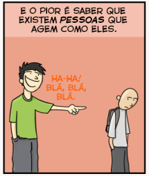
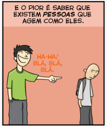

POLÊMICAS - ABRIL
Um por todos e todos pela chegada do ar-condicionado!
Será que após o belíssimo evento promovido pelo Grêmio Estudantil, com o tema: Um por todos e todos contra o bullying, esse terrível mal foi totalmente erradicado da nossa escola? Pelo que se aparenta, as lágrimas nos olhos de alguns era mais falsas que os tombos no Neymar na copa, fazer o quê? É uma pena que essas pessoas deixaram os ensinamentos morrerem no meio do caminho. Parece que os “danadinhos” estão realmente dispostos a ter uma conversinha particular com Andreia. É, meus queridos, infelizmente, o bullying só será erradicado da nossa escola quando o ar-condicionado chegar!
 
